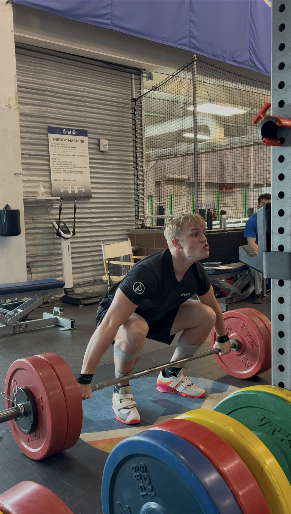

What Is Olympic Weightlifting?
Olympic weightlifting — often called "the lifts" — is a strength sport contested at every Summer Olympics since 1896. Athletes compete in two movements: the Snatch and the Clean & Jerk. The combined total of an athlete's best successful attempt in each lift determines the winner.
The Snatch
The barbell travels from the floor to locked-out overhead in a single continuous movement. The lifter pulls the bar explosively, drops under it in a full squat, and stands to complete the lift. It is considered the most technically demanding movement in all of sport.
The Clean & Jerk
A two-phase movement. In the clean, the athlete pulls the bar from the floor to the shoulders (the "rack" position). In the jerk, the athlete drives the bar overhead using a powerful leg drive, splitting or squatting underneath before standing to finish. World-class men in the heaviest class have jerked over 265 kg (584 lbs).

Derek W. Bergeson — competing in Olympic-style weightlifting at the university national level.
Did You Know?
The snatch requires the bar to travel roughly 2 meters in under 1 second. Peak bar velocity during a world-class snatch exceeds 2.0 m/s. The entire lift is over before most people blink twice.
My Experience
I compete in Olympic-style weightlifting at the University National level. The sport demands the kind of disciplined, process-oriented mindset that I carry into every professional endeavor — whether I'm modeling a pricing strategy in Excel or standing on the platform with 200+ people watching.
Weightlifting has taught me that elite performance requires:
- Consistent, deliberate practice over months and years — not bursts of effort
- Objective self-assessment: video review, coaching feedback, data-driven adjustment
- Mental composure under pressure — each attempt at a meet is pass/fail with no second chances in that moment
- Patience with a long feedback loop — technique improvements compound slowly
These are the same skills I rely on when building financial models, managing teams, or pitching recommendations to stakeholders.
Try My Workout Planner →Steps to a Successful Competition Day
A weightlifting meet is won or lost long before you arrive at the venue. Here is how I approach competition day:
-
Morning preparation (2–3 hours before weigh-in)
- Wake up and drink 500 mL of water immediately
- Eat a light, familiar meal — oats, banana, eggs
- Review opening attempt numbers; confirm with coach
- Pack bag: singlet, belt, shoes, chalk, snacks for between sessions
-
Weigh-in & registration
- Step on the scale; confirm body weight is within the category
- Submit opening attempts to the technical official (must be done 2 hours before session)
- Begin aggressive refueling: carbohydrates, electrolytes, fluids
-
Warm-up room
- Start with 15–20 minutes of mobility and activation drills
- Work up in small increments — never rush to a heavy weight
- Time final warm-up lift to finish ~3 minutes before your opening attempt on the competition platform
-
Competition platform — Snatch (3 attempts)
- Opening attempt: something you can make on your worst day — sets the tone
- Second attempt: a solid, competition-PR-range lift
- Third attempt: your target for the day — peak effort
-
Break between Snatch and Clean & Jerk
- Eat: rice cakes, fruit, a small carbohydrate source
- Stay warm — light movement, stay loose
- Recalculate total needed to medal or hit your target
-
Competition platform — Clean & Jerk (3 attempts)
- Same strategy as Snatch: conservative opener, solid second, max effort third
- The jerk is where meets are won or lost — stay composed under the bar
-
Post-competition
- Record your lifts and attempts in your training log
- Note anything that felt off technically — address it in the next training cycle
- Eat a real meal, recover, and rest
Training Philosophy
Olympic weightlifting training is built around specificity and volume. Unlike powerlifting, where you can grind through a lift with imperfect technique, the snatch and clean & jerk are so technically demanding that technique breakdown under fatigue is the primary limiter — not raw strength.
Weekly Structure
A typical training week includes 5–6 sessions. Each session opens with the competition lifts (Snatch, Clean & Jerk) while the nervous system is fresh, then moves into strength accessories (squat, pull, press variations).
Key Principles
Every good weightlifting program emphasizes:
- Front squat & back squat as the primary strength builders
- Pulls (snatch pull, clean pull) to reinforce bar path and rate of force development
- Positional drills (pause snatches, segment cleans) to hammer technique at key positions
- Daily autoregulation — adjust loads based on how you feel that day; the bar always tells the truth
My Training Goal
Continue improving technically while building the strength base needed to compete at the next level. Every kilogram added to the total is earned — not given.
Technique in Action
Watch how elite technique breaks down in slow motion. Catalyst Athletics coach Greg Everett demonstrates the critical role of bar contact in the snatch and clean — one of the most commonly misunderstood concepts in the sport.
Olympic Weightlifting — Medals by Country
The interactive visualization below shows Olympic medal counts in weightlifting broken down by country. Explore the data — hover over countries, filter by medal type, and see how the sport's competitive landscape has shifted over the decades.